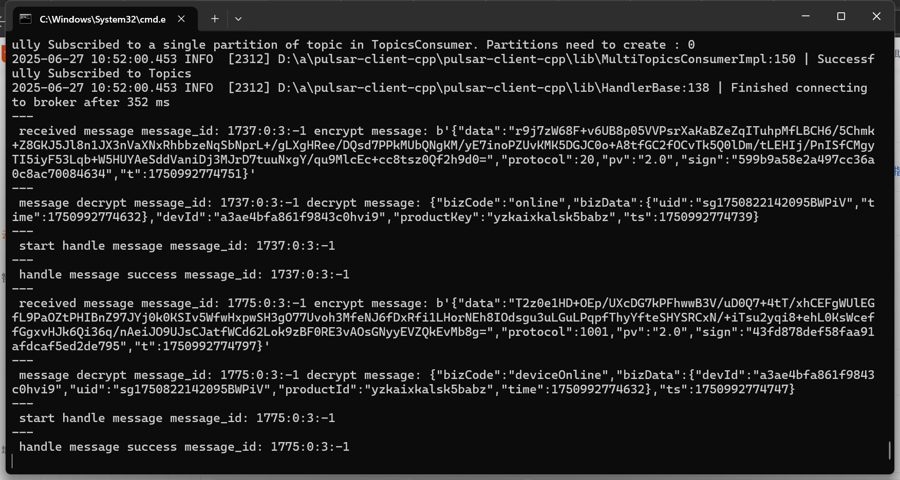

Visual Showcase
A collection of my technical implementations, local network topologies, and computer vision outputs.

LocalTuya IoT Network Architecture
Computer Vision: Edge Detection Output
A collection of my technical implementations, local network topologies, and computer vision outputs.

LocalTuya IoT Network Architecture
Computer Vision: Edge Detection Output